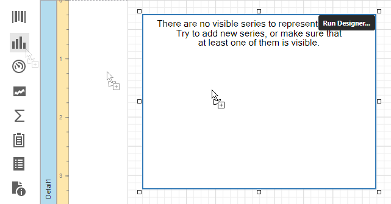

Add a Chart (Use a Series Template)
This document describes how to create a report with a Chart control bound to data and generate all series automatically based on a common template.
Add a Chart to a Report
Drop the Chart control from the Toolbox onto the Detail band.

Click Run Designer... to invoke the Chart Designer.

Specify the Data Source and Data Member properties to bind the chart to data. The chart's Series Data Member property specifies a data field that should provide data for series names. A new series should be created for each record in this data field.

Note
The report's Data Source property should be set to None because the Chart is in the Detail band. When a report has its Data Source property specified, the Chart is repeated in preview as many times as there are records in the report data source.
Adjust the Series Template
Use the Argument Data Member and Value Data Members properties to define where to get data for point arguments and values.

Make sure that the Argument Scale Type and Value properties are set to appropriate values.
Customize the Chart
Perform the following customization to improve the chart's appearance:
- Set the Labels Visibility property to False to avoid overlapping series labels.
- Specify the color settings used to draw the chart's series. For instance, select Nature Colors in the Palette's drop-down list.
View the Result
Switch to Print Preview to see the resulting report.